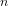
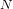
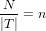
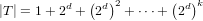
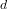
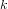
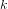
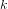
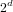

vtkLabelHierarchy
Section: Visualization Toolkit Rendering Classes
Usage
This class represents labels in a hierarchy used to denote rendering priority.
A binary tree of labels is maintained that subdivides the bounds of the
of the label anchors spatially. Which level of the tree a label occupies
determines its priority; those at higher levels of the tree will be
more likely to render than those at lower levels of the tree.
Pass vtkLabelHierarchy objects to a vtkLabelPlacementMapper filter for dynamic,
non-overlapping, per-frame placement of labels.
Note that if we have a d-dimensional binary tree and we want a fixed
 we can compute the depth of tree required assuming a uniform distribution
 the number of nodes it contains).
Because we have a uniform distribution, the tree will be uniformly subdivided
 \f[ k = \frac{\log{\frac{N}{2n}}}{\log{2^d}} \f]
 all the nodes will be in the leaves of the tree and those leaves will be at
 To fix that, we'll choose to move some anchors upwards.
The exact number to move upwards depends on \a TargetLabelCount. We'll
move as many up as required to have \a TargetLabelCount at each node.
all the nodes will be in the leaves of the tree and those leaves will be at
 To fix that, we'll choose to move some anchors upwards.
The exact number to move upwards depends on \a TargetLabelCount. We'll
move as many up as required to have \a TargetLabelCount at each node.
You should avoid situations where \a MaximumDepth does not allow for
\a TargetLabelCount or fewer entries at each node. The \a MaximumDepth
is a hard limit while \a TargetLabelCount is a suggested optimum. You will
end up with many more than \a TargetLabelCount entries per node and things
will be sloooow.
To create an instance of class vtkLabelHierarchy, simply
invoke its constructor as follows
obj = vtkLabelHierarchy
Methods
The class vtkLabelHierarchy has several methods that can be used.
They are listed below.
Note that the documentation is translated automatically from the VTK sources,
and may not be completely intelligible. When in doubt, consult the VTK website.
In the methods listed below, obj is an instance of the vtkLabelHierarchy class.
-
string = obj.GetClassName ()
-
int = obj.IsA (string name)
-
vtkLabelHierarchy = obj.NewInstance ()
-
vtkLabelHierarchy = obj.SafeDownCast (vtkObject o)
-
obj.SetPoints (vtkPoints ) - Override SetPoints so we can reset the hierarchy when the points change.
-
obj.ComputeHierarchy () - Fill the hierarchy with the input labels.
- 
-
-
obj.SetMaximumDepth (int ) - The maximum depth of the octree.
-
int = obj.GetMaximumDepth () - The maximum depth of the octree.
-
obj.SetTextProperty (vtkTextProperty tprop) - The default text property assigned to labels in this hierarchy.
-
vtkTextProperty = obj.GetTextProperty () - The default text property assigned to labels in this hierarchy.
-
obj.SetPriorities (vtkDataArray arr) - Set/get the array specifying the importance (priority) of each label.
-
vtkDataArray = obj.GetPriorities () - Set/get the array specifying the importance (priority) of each label.
-
obj.SetLabels (vtkAbstractArray arr) - Set/get the array specifying the text of each label.
-
vtkAbstractArray = obj.GetLabels () - Set/get the array specifying the text of each label.
-
obj.SetOrientations (vtkDataArray arr) - Set/get the array specifying the orientation of each label.
-
vtkDataArray = obj.GetOrientations () - Set/get the array specifying the orientation of each label.
-
obj.SetIconIndices (vtkIntArray arr) - Set/get the array specifying the icon index of each label.
-
vtkIntArray = obj.GetIconIndices () - Set/get the array specifying the icon index of each label.
-
obj.SetSizes (vtkDataArray arr) - Set/get the array specifying the size of each label.
-
vtkDataArray = obj.GetSizes () - Set/get the array specifying the size of each label.
-
obj.SetBoundedSizes (vtkDataArray arr) - Set/get the array specifying the maximum width and height in world coordinates of each label.
-
vtkDataArray = obj.GetBoundedSizes () - Set/get the array specifying the maximum width and height in world coordinates of each label.
-
obj.GetDiscreteNodeCoordinatesFromWorldPoint (int ijk[3], double pt[3], int level) - Given a depth in the hierarchy (\a level) and a point \a pt in world space, compute \a ijk.
This is used to find other octree nodes at the same \a level that are within the search radius
for candidate labels to be placed. It is called with \a pt set to the camera eye point and
pythagorean quadruples increasingly distant from the origin are added to \a ijk to identify
octree nodes whose labels should be placed.
@param[out] ijk - discrete coordinates of the octree node at \a level containing \a pt.
@param[in] pt - input world point coordinates
@param[in] level - input octree level to be considered
-
vtkIdType = obj.GetNumberOfCells () - Inherited members (from vtkDataSet)
-
vtkCell = obj.GetCell (vtkIdType ) - Inherited members (from vtkDataSet)
-
obj.GetCell (vtkIdType , vtkGenericCell ) - Inherited members (from vtkDataSet)
-
int = obj.GetCellType (vtkIdType ) - Inherited members (from vtkDataSet)
-
obj.GetCellPoints (vtkIdType , vtkIdList ) - Inherited members (from vtkDataSet)
-
obj.GetPointCells (vtkIdType , vtkIdList ) - Inherited members (from vtkDataSet)
-
int = obj.GetMaxCellSize () - Inherited members (from vtkDataSet)
-
vtkPoints = obj.GetCenterPts () - Provide access to original coordinates of sets of coincident points
-
vtkCoincidentPoints = obj.GetCoincidentPoints () - Provide access to the set of coincident points that have been
perturbed by the hierarchy in order to render labels for each
without overlap.